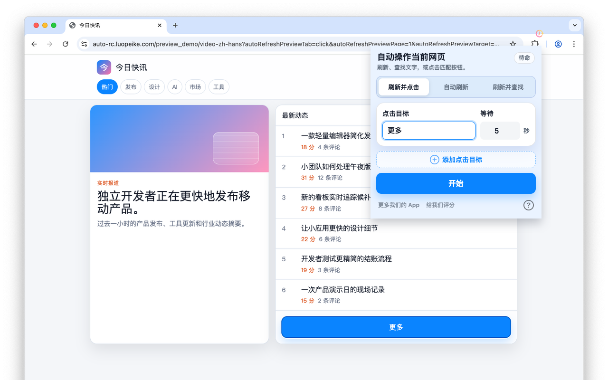

按自定义间隔自动刷新网页
设置刷新间隔，让重要网页在浏览器中持续保持最新。

适合监控票务放票、库存补货、价格变化、订单状态、后台看板等需要反复刷新的页面。
设置刷新间隔，让重要网页在浏览器中持续保持最新。
监听 Buy、Next、Submit、Reserve 等按钮文字，出现后自动点击。
适合查找票务、库存、订单、价格和后台看板中的目标文字。
设置保存在浏览器本地，不需要注册网页账户。
• iPhone 和 iPad 上的 Chrome 或 Edge 无法安装扩展，您需要使用 Safari。
• 此扩展有 Safari 版本。在 App Store 搜索 “Auto Refresh & Clicker”，或者点击这里，花费 $2.99 购买后，您就可以在 iOS 和 macOS 设备上使用它。
• 由于 iOS 系统限制，Safari 扩展在后台模式下只能运行很短的时间。
• 建议您在前台运行以获得最佳效果。您可以设置 iPhone 屏幕在扩展打开时保持常亮。
1. 输入时间间隔和关键字；
2. 点击 "开始"；
3. 如果您想使用其他间隔和关键字，请点击 "停止"，然后重复步骤 1 和 2。
1. 输入时间间隔；
2. 点击 "开始"；
3. 如果您想使用其他间隔，请点击 "停止"，然后重复步骤 1 和 2。
1. 输入时间间隔和关键字；
2. 点击 "开始"；
3. 如果您想使用其他间隔和关键字使用 "Refresh & Find"，请点击 "停止"，然后重复步骤 1 和 2。